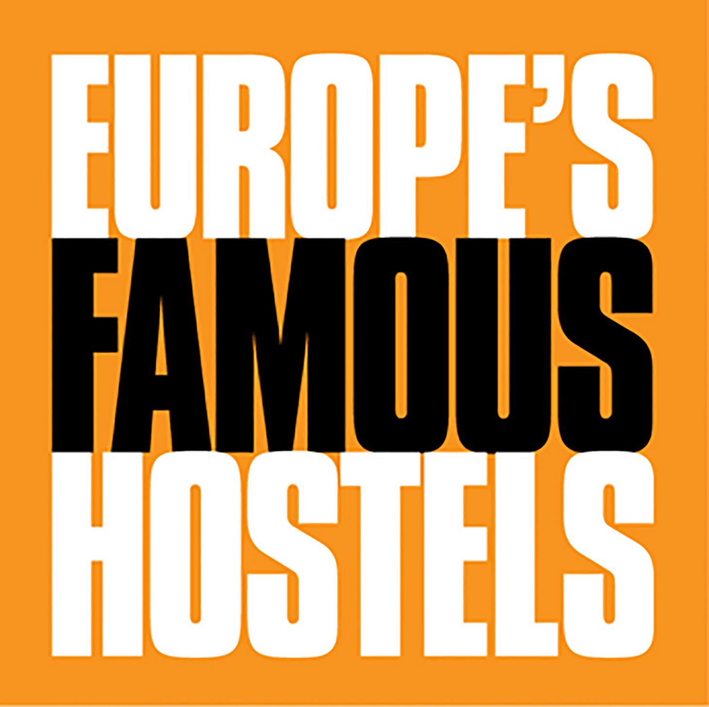
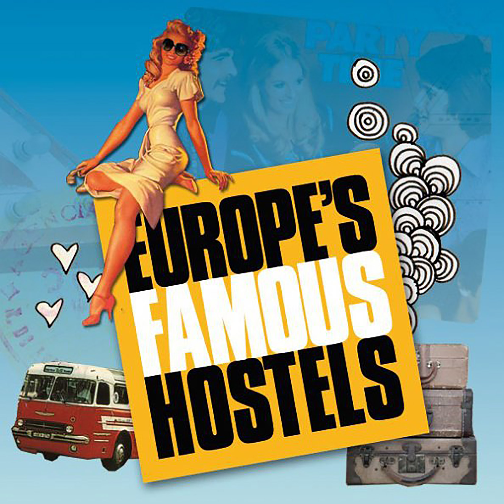

Europe's Famous Hostels
Europe's Famous Hostels is a network of the best, most exciting, fun and safe hostels in Europe. We guarantee a unique experience - that you'll never forget!
Europe’s Famous Hostels is an association of individually owned, independent hostels. The association was founded in 1995 when it was made up of just 5 members. As of 2014 we have grown to include 44 Hostels, both in Europe and beyond.
Europe’s Famous Hostels’ purpose is to provide a recognisable stamp of quality in the Hostelling business. Our name comes as a guarantee that our customers will have a great stay at the best value; choosing a Europe’s Famous Hostel is choosing quality and great customer service
Each city has only one Famous Hostel and staying at a Europe’s Famous Hostel guarantees you’ll have a great stay at unbeatable value. Where a Europe’s Famous Hostel has not yet been selected, we strive to provide travellers with the best option that each of the 200 most-searched for cities have to offer. Thanks to our years of experience at the very top of the hostelling business, we can guarantee that any hostel suggested by us will be the best that city has to offer.

Europe's Famous 42 Hostels:
- Amsterdam, Flying Pig Hostel
- Athens, AthenStyle
- Bad Gastein, Euro Youth Hotel
- Barcelona, Kabul Hostel
- Belgrade, ArkaBarka Floating Hostel
- Berlin, Circus Hostel Berlin
- Bratislava, Patio Hostel
- Bruges, Bauhaus Hostel
- Budapest, Maverick Hostel
- Cardiff, Nosda Studio Hostel
- Copenhagen, Copenhagen Downtown Hostel
- Dublin, Avalon House
- Edinburgh, St Christopher's Inn Edinburgh
- Eindhoven, 3BE Eindhoven Hostel
- Frankfurt, Five Elements Frankfurt
- Granada, Oasis Granada
- Interlaken, Balmer's Herberge
- Jerusalem, Abraham Jerusalem Hostel
- Kiev, theHub
- Krakow, Pink Panther's Hostel
- Lisbon, Oasis Hostel Lisbon
- Loch Ness, Morag's Lodge
- London, St Christopher's Village
- Madrid, Cat's Hostel Madrid
- Malaga, Oasis Hostel Malaga
- Marseille, Vertigo Vieux-Port Hostel
- Munich, Euro Youth Hostel
- Naples, Hostel of the Sun
- Nice, Villa Saint Exupery Hostel
- Paris, St Christopher's Paris
- Prague, Czech Inn
- Riga, Friendly Fun Frank's Hostel
- Rimini, Sunflower Hostel Rimini
- Rome, Alessandro Palace
- Rotterdam, Hostel ROOM
- Salzburg, Yoho Hostel
- Sevilla, Oasis Hostel Seville
- Sorrento, Seven Hostel
- Stockholm, City Backpackers Stockholm
- Valencia, Home Youth Hostel
- Vienna, Hostel Ruthensteiner
- Warsaw, Oki Doki Hostel
- Zagreb, Chillout Hostel
Facebook
Blog
Twitter